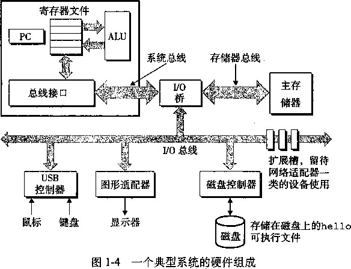

加载的性能 363
5.13应用：性能提高技术……••… 369
确认和消除性能瓶颈…………3矽
程序剖析 370
使用剖析程序来指导
优化 371
Amdahl 定律 “…•… 374
练习题答案••…••…•……… …………378
存储技术 …… 382
随机访问存储器………… 3S3
磁盘存储 389
固态硬盘 398
存储技术趋势" 399
局部性 …… 401
对程序数据引用的
局部性 402
存储器层次结构中的
^ 406
6:3.2存储器层次结构概念
小结 408
6.4.1通用的高速缓存存储器
结构 409
6.4.2直接映射高速缓存 410
6.4.3组相联高速缓存 416
6.4.4全相联高速缓存 418
有关写的问题 420
—个真实的高速缓存
层次结构的解剖 421
6.4.7高速缓存参数的性能影响… 422
6.6综合：高速缓存对程序性能的
驗向 426
6.6.1存储器山 426
6.6.2重新排列循环以提高空间
局部性 430
6.6.3在程序中利用局部性 ……433
小结 433
第二部分在系统上运行程序
第7章链接………… 448
12 静态链接 ……… 450
7.6.1链接器如何解析多重定义的
全局符号 455
7.6.3链接器如何使用静态库来
解析引用 460
重定位条目
61
62
65
466
467
468
471
473
474
474
479
48(
7.7.2重定位符号引用
7.8可执行目标文件
7.9加载可执行目标文件
7.10动态链接共享库
7.11从应用程序中加载和链接
共享库
7.12与位置无关的代码（PIC) •”…
7.13处理目标文件的工具
小结
参考文献说明
家庭作*
练习题答案
第8章异常控制流
/ /- 2 4. 00 00 00 00 > 萃岑 4,
8.1异常
异常处理 ……
8.1.2异常的类别
Linux/IA32 系统中的
异常
487
487
487
488
488
489
491
492
492
492
495
499
500
502
504
505
509 511
8.2进程
8.2.1逻辑控制流
8.2.2并发流
8.2.3私有地址空间
8.2.4用户模式和内核模式……
上下文切换
8.3系统调用错误处理
8.4进程控制
获取进程ID
8.4.2创建和终止进程
回收子进程
让进程休眠
8.4.5加载并运行程序
8.4.6利用fork和execve运行
程序
信号 ••••••
信号术语
8.5.2发送信号……
8.5.3接收信号
8.5.4信号处理问题
可移植的信号处理……… 516
显式地阻塞和取消阻塞
信号 …… 517
同步流以避免讨厌的并发
错误 517
家庭■ 525
第9章虚拟存储器 534
9.3虚拟存储器作为缓存的工具……53(5
DRAM缓存的组织结构… 537
页表………… …… 537
页命中 538
缺页 538
分配页面… 539
又是局部性救了我们……539
虚拟存储器作为存储器管理的
工具…… 540
虚拟存储器作为存储器保护的
工具 541
结合高速缓存和虚拟
存储器 v 544
利用TLB加速地址翻译… 545
多级页表 546
综合：端到端的地址翻译… 547
案例研究：Intel Core i7/Linux
存储器系统 550
Linux虚拟存储器系统… 554
存储器映射 …………5允
再看共享对象 557
再看 fork 函数 558
再看 execve 函数 559
使用mmap函数的用户级
559
561
561
563
564
565 565 567 567
567
568
570
576
576
578
579
580
580
581
582
582
583
583
584
584
585
存储器映射•………
malloc 和 free 函数…
为什么要使用动态存储器
分配…•••••••• ••••••
分配器的要求和目标……
碎片
实现问题
隐式空闲链表
放置已分配的块”
分割空闲块 ……••
9.9.9获取额外的堆存储器……
合并空闲块
带边界标记的合并•
综合•：实现一个简单的
分配器••………
显式空闲链表
分离的空闲链表
9.10垃圾收集 ……
垃圾收集器的基本知识…
Mark&Sweep 垃圾
收集器
C程序的保守
Mark&Sweep
C程序中常见的与存储器有关的
错误 •••••••••••
间接引用坏指妙••…••••
读未初始化的存储器…
允许栈缓冲区溢出……
假设指针和它们指向的
对象是相同大小的
-9.11.5造成错位错误
引用指针，而不是它所
指向的对象
误解指针运算
引用不存在的变量……
引用空闲堆块中的
数据•••
引起存储器泄漏……
题答案 589
第三部分程序间的交互和通信 第 10 章系统级 I/O 596
RIO的无缓冲的输入输出 函数 600
RIO的带缓冲的输入
函数 600
综合：我该使用哪些I/O
函数 610
小结…… 611
练习题答案 …… 612
第 11 章网络编程 614
客户端-服务器编程模型 ……614
网络 615
全球IP因特网 618
IP 地址 619
因特网域名 620
因特网连接 623
套接字地址结构……… 625
socket 函数 626
connect 函数 626
open__clientfd 函数… 627
bind 函 628
listen 函数 628
open_listenfd 函数… 628
accept 函数 629
echo客户端和服务器的
示例 630
Web 服务器 633
Web 基础 633
Web 内容 633
服务动态内容 636
6综合：TINY Web服务器………6外
参考文献说明 ……•• 645
家庭#ik 646
第12章并发编程 648
12.1.1基于进程的并发
服务器 649
关于进程的优劣"… ….651 12.2基于I/O多路复用的并发
编程 651
12.2.1基于I/O多路复用的并发
事件驱动服务器 653
I/O多路复用技术的
优劣 657
线程执行模型 幻7
Posix 线程 638
创建线程 659
终止线程. 659
回收已终止线程的
资源 660
—个基于线程的并发
服务器 661
多线程程序中的共享变量…… 662
线程存储器模型 663
12.4.2将变量映射到存储器 …663
进度图 667
信号量 668
12.5.3使用信号量来实现
互斥 669
12.5.4利用信号量来调度
共享资源 670
12.5.5综合：基于预线程化的
并发服务器 674
12.7.1线程安全 680
可重入性 682
12.7.3在线程化的程序中使用
已存在的库函数 682
竞争 683
死锁 685
家庭 688
附录A错误处理 694
参考 & 献 698
计算机精品学习资料大放送
软考官方指定教材及同步辅导书下载丨软考历年真是解析与答案
软考视频丨考试机构丨考试时间安排
Java 一览无余：Java视频教程丨Java SE丨Java EE
.Net技术精品资料下载汇总：ASP.NET篇
.Net技术精品资料下载汇总：C#语言篇
.Net技术精品资料下载汇总：VB.NET篇
撼世出击：C/C++编程语言学习资料尽收眼底电子书+视频教程
Visual C++(VC/MFC)学习电子书及开发工具下载
Perl/CGI脚本语言编程学习资源下载地址大全
Python语言编程学习资料(电子书+视频教程)下载汇总
最新最全Ruby、Ruby on Rails精品电子书等学习资料下载
数据库精品学习资源汇总：MySQL篇丨SQL Server篇丨Oracle篇
最强HTML/xHTML、CSS精品学习资料下载汇总
最新JavaScript、Ajax典藏级学习资料下载分类汇总
网络最强PHP开发工具+电子书+视频教程等资料下载汇总
UML学习电子资下载汇总软件设计与开发人员必备
经典LinuxCBT视频教程系列Linux快速学习视频教程一帖通
天罗地网：精品Linux学习资料大收集(电子书+视频教程）Linux参考资源大系
Linux系统管理员必备参考资料下载汇总
Linux shell、内核及系统编程精品资料下载汇总
UNIX操作系统精品学习资料< 电子书+视频 >分类总汇
FreeBSD/OpenBSD/NetBSD精品学习资源索引含书籍+视频
Solaris/OpenSolaris电子书、视频等精华资料下载索引
丨第1章
Computer Systems ： A Programmer^ Perspective, 2E
计算机系统漫游
计算机系统是由硬件和系统软件组成的，它们共同工作来运行应用程序。虽然系统的具体实 现方式随着时间不断变化，但是系统内在的概念却没有改变。所有计算机系统都有相似的硬件和 软件组件，它们执行着相似的功能。一些程序员希望深入了解这些组件是如何工作的 ， 以及这些 组件是如何影响程序的正确性和性能的，以此来提高自身的技能。本书便是为这些读者而写的。
现在就要开始一次有趣的漫游历程了。如果你全力投身学习本书中的概念 ， 完全理解底层计 算机系统以及它对应用程序的影响 ， 那么你将会逐渐成为凤毛麟角的“权烕”程序员。
你将会学习一些实践技巧，比如如何避免由计算机表示数字的方式导致的奇怪的数字错误。 你将学会怎样通过一些聪明的小窍门来优化你的C代码，以充分利用现代处理器和存储器系统 的设计。你将了解到编译器是如何实现过程调用的 ， 以及如何利用这些知识避免缓冲区溢出错误 带来的安全漏洞，这些弱点会给网络和因特网软件带来了巨大的麻烦。你将学会如何识别和避免 链接时那些令人讨厌的错误 ， 它们困扰着普通的程序员。你将学会如何编写自己的Unix外壳、 自己的动态存储分配包，甚至是自己的Web服务器。你会认识到并发带来的希望和陷阱 ， 当单 个芯片上集成了多个处理器核时，这个主题变得越来越重要。
在关于C编程语言的经典文献[58]中，Kemighan和Ritchie通过图1-1所示的hello程序 来向读者介绍C语言。尽管hello程序非常简单 ， 但是为了让它完成运行，系统的每个主要组 成部分都需要协调工作。从某种意义上来说，本书的目的就是要帮助你了解当你在系统上执行 hello程序时 ， 系统发生了什么以及为什么会这样。
code/intro/hello. c
#include <stdio.h>
2
int mainO
{
printf("hello, world\n");
}
： ： code/intro/hello. c
图1-1 hello程序
我们通过跟踪hello程序的生命周期来开始对系统的学习——从它被程序员创建，到在系 统上运行，输出简单的消息，然后终止 。.我 们将沿着这个程序的生命周期，简要地介绍一些逐步 出现的关键概念、专业术语和组成部分。后面的章节将围绕这些内容展开。
1.1信息就是位+上下文
hello程序的生命周期是从一个源程序（或者说源文件）开始的 ， 即程序员利用编辑器创 建并保存的文本文件 ， 文件名是hello.c。源程序实际上就是一个由值0和1组成的位（bit) 序列，8个位被组织成一组，称为字节。每个字节表示程序中某个文本字符。 .
大部分的现代系统都使用ASCII标准来表示文本字符 , .这种方式实际上就是用一个唯一的 单字节大小的整数值来表示每个字符。例如图1-2中给出了hello • c程序的ASCII码表示。
hello .c程序以字节序列的方式存储在文件中。每个字节都有一个整数值，而该整数值对
应于某个字符。例如，第一个字节的整数值是35,它对应的就是字符；第二个字节整数值 为105,它对应的字符是‘i’，依次类推。注意，每个文本行都是以一个不可见的换行符‘\n’ 来结束的，它所对应的整数值为10。像hello • c这样只由ASCII字符构成的文件称为文本文 件，所有其他文件都称为二进制文件。
# |
i |
n |
c |
1 |
u |
d |
e |
<sp> |
< |
■ s |
t |
d |
i |
0 |
|
35 |
105 |
110 |
99 |
108 |
117 |
100 |
101 |
32 |
60 |
115 |
116 |
100 |
105 |
111 |
46 |
h |
> |
\n |
\n |
i |
n |
t |
<sp> |
m |
a |
i |
n |
( |
) |
\n |
|
104 |
62 |
10 |
10 |
105 |
110 |
116 |
32 |
109 |
97 |
105 |
110 |
40 |
41 |
10 |
123 |
\n |
<sp> |
<sp> <sp> <sp> |
P |
r |
i |
n |
t |
f |
( |
" |
h |
e |
1 |
||
10 |
32 |
32 |
32 |
32 |
112 |
114 |
105 |
110 |
116 |
102 |
40 |
34 |
104 |
101 |
108 |
1 |
0 |
9 |
<sp> |
w |
0 |
. r |
1 |
d |
\ |
n |
fl |
) |
f |
\n |
> |
108 |
111 |
44 |
32 |
119 |
111 |
114 |
108 |
100 |
92 |
110 |
34 |
41 |
59 |
10 |
125 |
图1-2 hello. c的ASCII文本表示
hello • c的表示方法说明了一个基本的思想：系统中所有的信息■~包括磁盘文件、存储 器中的程序、存储器中存放的用户数据以及网络上传送的数据，都是由一串位表示的。区分不同 数据对象的唯一方法是我们读到这些数据对象时的上下女。比如，在不同的上下文中，一个同样 的字节序列可能表示一个整数、浮点数、字符串或者机器指令。
作为程序员，我们需要了解数字的机器表示方式，因为它们与实际的整数和实数是不同的。 它们是对真值的有限近似值，有时候会有意想不到的行为表现。这方面的基本原理将在第2章中 详细描述。
C编程语言的起源
C语言是贝尔实验室的Dennis Ritchie于1969年〜1973年间创建的。美国国家标准学会 (American National Standards Institute, ANSI)在 1989 年顾布 了 ANSI C 的标准，后来使 C 语 言标准化成为了国际标准化组织（International Standards Organization, ISO)的责任。这些标准 定义了 C语言和一系列函数库，即所谓的“C标准库”。Kemighan和Ritchie在他们的经典著 作中描述了 ANSI C,这本著作被人们满怀感情地称为“K&R” [58]。用Ritchie的话来说[88],
C语言是“古怪的、有缺陷的，但也是一个巨大的成功”。为什么会成功呢？
C语言与Unix操作系统关系密切。C语言从一开始就是作为一种用于Unix系统的程序 设计语言而开发出来的。大部分Unix内核，以及所有支撑工具和函数库都用C语言编 写的。20世纪70年代后期到80年代初期，Unix在高等院校兴起，许多人开始接触C语 言并喜欢上了它。因为Unix几乎全部是用C编写的，所以可以很方便地移植到侖的机器 上，这种特点为C和Unix赢得了更为广泛的支持。
•C语言小而简单。掌控C语言设计的是一个人而非一个协会,因此这个简洁明了、 没有什么冗赘的一致的设计。K&R这本书用了大量的例子和练习描述了完整的C语言及 其标准库，而全书不过261页。C语言的简单使它相对而言易于学习,也易于辞植到不同 的计算机上。
.C语言是为实践目的设计的。C语言是为实现Unix操作系统而谈计的。启来，其他人发 现能够用这门语言无障碍地编写他们想要的程序。
C语言是系统级编程的首选，同时它也扣常适用于应用k程序的编写。然而；它也并非适
用于所有的程序员和所有的情况。C语言的指针是造成困惑和程序错误的一个常见原因。同时，
C语言还缺乏对非常有用的抽象（例如类、对象和.异常）的显式支持。像C++和Java这样针 对应用级程序的新程序设计语言解决了这些问题。
1.2 程序被其他程序翻译成不同的格式
hello程序的生命周期是从一个高级C语言程序开始的，因为这种形式能够被人读懂。然 而，为了在系统上运行hello.c程序，每条C语句都必须被其他程序转化为一系列的低级机器 语言指令。然后这些指令按照一种称为可执行目标程序的格式打好包，并以二进制磁盘文件的形 式存放起来。目标程序也称为可执行目标文件。
在Unix系统上，从源文件到目标文件的转化是由编译器驱动程序完成的：
unix> gcc -o hello hello.c
在这里，GCC编译器驱动程序读取源程序文件hello.c,并把它翻译成一个可执行目标文件 hello。这个翻译的过程可分为四个阶段完成，如图1-3所示。执行这四个阶段的程序（预处理 器、编译器、汇编器和链接器）一起构成了编译系统（compilation system)。
printf•
hello.c |
预处理器 (cpp) |
hello.i |
编译器 ( cel ) |
hello.s |
汇编器 ( as ) |
1 > hello.o |
链接器 (Id) |
hello |
源程序 (文本） |
被修改的 源程序 |
汇编程序 (文本） |
可重定位 目标程序 |
可执行 百标程序 |
(文本）
(二进制)
(二进制）
图1-3编译系统
•预处理阶段。预处理器(cpp)根据以字符#开头的命令，修改原始的C程序。比如hello .C 中第1行的#include <stdio .h>命令告诉预处理器读取系统头文件stdio .h的内容, 并把它直接插人到程序文本中。结果就得到了另一个C程序，通常是以.1作为文件扩 展名。
•编译阶段。编译器（cel)将文本文件hello.i翻译成文本文件hello.S,它包含一个 汇编语言程序。汇编语言程序中的每条语句都以一种标准的文本格式确切地描述了一条低 级机器语言指令。汇编语言是非常有用的，因为它为不同高级语言的不同编译器提供了通 用的输出语言。例如,C编译器和Fortran编译器产生的输出文件用的都是一样的汇编语言。
•汇编阶段。接下来，汇编器（as)将hello , s翻译成机器语言指令,把这些指令打包成 一种叫傲可重定位目标程序（relocatable object program)的格式，并将结果保存在目标文 件hello .o中。hello.o文件是一个二进制文件，它的字节编码是机器语言指令而不是 字符。如果我们在文本编辑器中打开hello, o文件，看到的将是一堆乱码。
•链接阶段。请注意 ， hello程序调用了 printf函数，它是每个C编译器都会提供的标 准C库中的一个函数。printf函数存在于一个名为printf .o的单独的预编译好了的目 标文件中，而这个文件必须以某种方式合并到我们的hello.o程序中。链接器（Id)就 负责处理这种合并。结果就得到hello文件，它是一个可执行目标文件(或者简称为可 执行文件)，可以被加载到内存中，由系统执行。
GNU项目
GCC是GNU (GNU是GNU’s Not Unix的缩写）项目开发出来的众多有用工具之一。GNU 项目是1984年由Richard Stallman发起的一个免税的慈善项目。该项目的目标非常宏大，就是开 发出一个完整的类Unix的系统，其源代码能够不受限制地被修改和传播。GNU项目已经开发出 了一个包含Unix操作系统的所有主要部件的环境，但内核除外，内核是由Linux项目独立发展 而来的。GNU环境包括EMACS编辑器、GCC编译器、GDB调试器、汇编器、链接器、处理 二进制文件的工具以及其他一些部件。GCC编译器已经发展到支持许多不同的语言，能够针对 许多不同的机器生成代码。支持的语言包括C、C++、Fortran、Java、Pascal、面向对象C语言 (Objective-C)和 Ada。
GNU项目取得了非凡的成绩，但是却常常被忽略。现代开放源码运动（通常和Linux联系 在一起）的思想起源是GNU项目中自由软件（free software)的概念。（此处的free为自由言论 (free speech)中“自由”之意，而非免费啤酒（free beer)中“免费”之意。）而且，Linux如此 受欢迎在很大程度上还要归功于GNU工具，因为它们给Linux内核提供了环境。
1.3 了解编译系统如何工作是大有益处的
对于像hello, c这样简单的程序，我们可以依靠编译系统生成正确有效的机器代码。但 是，有一些重要的原因促使程序员必须知道编译系统是如何工作的，其原因如下：
•优化程序性能。现代编译器都是成熟的工具，通常可以生成很好的代码。作为程序员，我 们无需为了写出高效代码而去了解编译器的内部工作。但是，为了在C程序中做出好的编 码选择，我们确实需要了解一些机器代码以及编译器将不同的C语句转化为机器代码的方 式。例如，一个switch语句是否总是比一系列的if-then-else语句高效得多？ 一个 函数调用的开销有多大？ while循环比for循环更有效吗？指针引用比数组索引更有效 吗？为什么将循环求和的结果放到一个本地变量中，与将其放到一个通过引用传递过来的 参数中相比，运行速度要快很多呢？为什么我们只是简单地重新排列一下一个算术表达式 中的括号就能让一个函数运行得更快？ 、
在第3章中，我们将介绍两种相关的机器语言：IA32和X86-64。IA32是32位的， 目前普遍应用于运行Linux、Windows以及较新版本的Macintosh操作系统的机器上； X86-64是64位的，可以用在比较新的微处理器上。我们会介绍编译器是如何把不同的 C语言结构转换成它们的机器语言的。第5章，你将学习如何通过简单转换C语言代 码，以帮助编译器更好地完成工作，从而调整C程序的性能。在第6章，你将学习到 存储器系统的层次结构特性，C语言编译器将数组存放在存储器中的方式，以及C程 序又是如何能够利用这些知识从而更高效地运行。
•理解链接时出现的错误。根据我们的经验，一些最令人困扰的程序错误往往都与链接器操 作有关 ， 尤其是当你试图构建大型的软件系统时。例如，链接器报告它无法解析一个引 用，这是什么意思？静态变量和全局变量的区别是什么？如果你在不同的C文件中定义了 名字相同的两个全局变量会发生什么？静态库和动态库的区别是什么？我们在命令行上排 列库的顺序有什么影响？最严重的是，为什么有些链接错误直到运行时才会出现？在第7 章，你将得到这些问题的答案。
•避免安全漏洞。多年来，缓冲区溢出错误是造成大多数网络和Internet服务器上安全漏洞 的主要原因。存在这些错误是因为很少有人能理解限制他们从不受信任的站点接收数据 的数量和格式的重要性。学习安全编程的第一步就是理解数据和控制信息存储在程序栈 上的方式会引起的后果。作为学习汇编语言的一部分 ， 我们将在第3章中描述堆栈原理 和缓冲区溢出错误。我们还将学习程序员、编译器和操作系统可以用来降低攻击威胁的 方法。
1.4 处理器读并解释存储在存储器中的指令
此刻，hello.c源程序已经被编译系统翻译成了可执行目标文件hello,并存放在磁盘 上。要想在Unix系统上运行该可执行文件，我们将它的文件名输入到称为外壳（shell)的应 用程序中：
unix> ./hello hello, world unix>
外壳是一个命令行解释器，它输出一个提示符，等待你输入一个命令行，然后执行这个命 令。如果该命令行的第一个单词不是一个内置的外壳命令，那么外壳就会假设这是一个可执行文 件的名字，它将加载并运行这个文件。所以在此例中，外壳将加载并运行hello程序，然后等 待程序终止。hello程序在屏幕上输出它的信息，然后终止。外壳随后输出一个提示符，等待 下一个输入的命令行。
系统的硬件组成
为了理解运行hello程序时发生了什么，我们需要了解一个典型系统的硬件组织，如图 1-4所示。这张图是Intel Pentium系统产品系列的模型，但是所有其他系统也有相同的外观和特 性。现在不要担心这张图的复杂性——我们将在本书分阶段介绍大量的细节。
CPU

CPU ：中央处理单元；ALU :算术/逻辑单元；PC ：程序计数器；USB ：通用串行总线
总线
贯穿整个系统的是一组电子管道，称做总线，它携带信息字节并负责在各个部件间传递。通 常总线被^：计成传送定长的字节块,也就是字（word)。字中的字节数（即字长）是一个基本的 系统参数，在各个系统中的情况都不尽相同。现在的大多数机器字长有的是4个字节 (32位 ),有 的是8个字节（64位)。为了讨论的方便，假设字长为4个字节，并且总线每次只传送1个字。
I/O设备